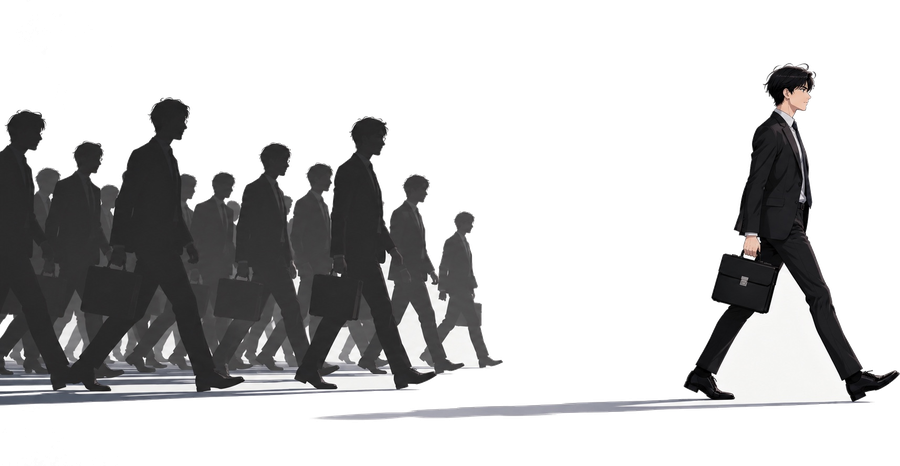

Enter, or A on the controller
Car radio
The music stations play real songs from your own Spotify Premium account. Until you sign in, the only station on the dial is Tokonto Classical Radio: public-domain orchestral and piano recordings that come with the game.
Create an app at developer.spotify.com/dashboard (tick Web API and Web Playback SDK) and add this Redirect URI to it, exactly:
Salary Man · Konto
Your next stop starts here.
SOTI So24
Controller
No controller. Connect one and press A on it.
Keys
Ground
SALARY MAN is developed by DHInc and powered by Shigoto Engine.
Konto and its locations are fictional. Character names, employers and story events form part of the game's fictional setting.
This software incorporates third-party models, materials and open-source components. Each is subject to its respective license. Third-party names and trademarks belong to their respective owners.
Character assets include Microsoft Rocketbox and MakeHuman / MPFB. Environment assets include Poly Haven and Kenney. Vehicle assets include work by independent Sketchfab artists.
Technology includes Three.js and Rapier. Full artist attribution, source information and license notices are available under Credits & licenses.
DHInc / SALARY MAN / SHIGOTO ENGINE
A DHInc production
Three.js · Rapier
This game saves progress automatically.
Allow the save indicator to finish before closing the game.
Saved progress is stored on this device.
Your commute begins in Mizuho.

Loading